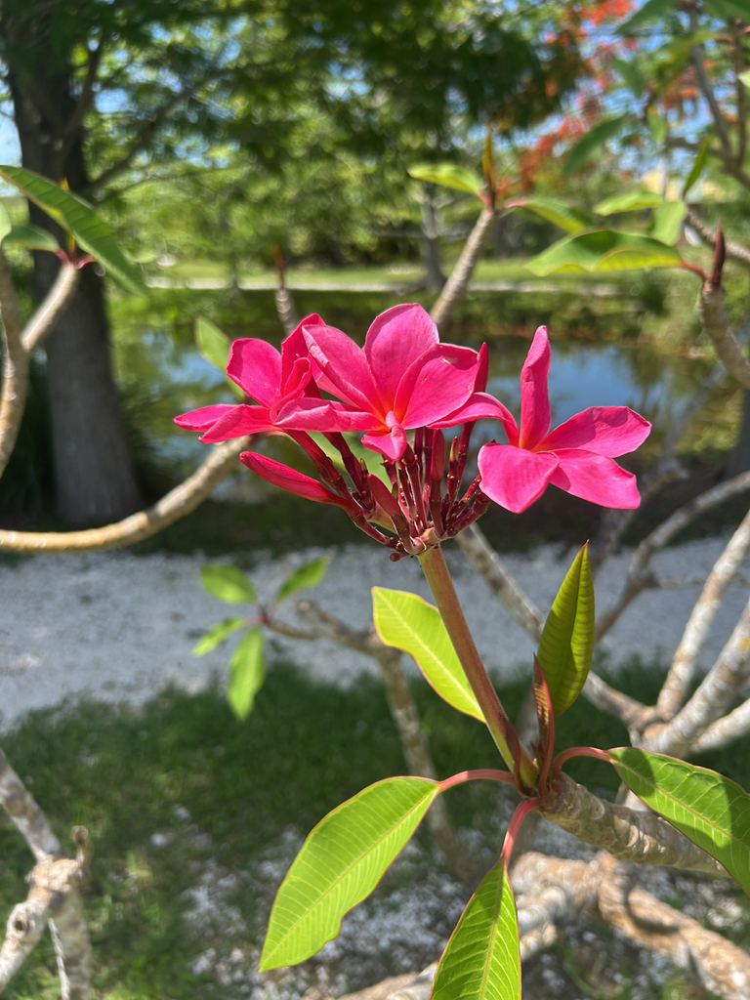

- The fragrance of plumeria flowers is one of the most recognizable scents in the tropical world — the base of Hawaiian lei culture, a fixture in tropical perfumery, and the scent most visitors associate with warm-climate vacations.
- The flowers produce no nectar. Sphinx moths visit them at night, attracted by the fragrance, and inadvertently carry pollen between plants without getting anything in return. Botanists call this pollination-by-deceit.
- The milky white sap is a skin and eye irritant. It is not the same as the related toxic oleanders, but caution is warranted.
- Deciduous in winter — the bare, blunt-tipped branches look dead and often prompt concern. They are not.
- Extraordinarily easy to propagate — cut a mature branch, let the wound callus in a shaded spot for a week, push it into sandy soil, and it roots and grows into a new tree. Local gardeners pass cuttings around freely.
Non-native. Native to Mexico, Central America, and the Caribbean. Member of Apocynaceae — the dogbane family, same as oleander and periwinkle. Named for 16th-century Italian botanist Frangipani, who is also credited with developing a perfume of similar scent.
- Plumeria occupies a specific cultural space that few ornamental plants match. In Hawaii it is the primary flower of the lei — the traditional garland given in welcome. In Hindu and Buddhist cultures it is associated with temples and devotion. In Mexico and Central America it has long been associated with funerals and remembrance.
- The same flower means welcome in one culture and mourning in another, depending entirely on context.
- The pollination system is a botanical con. The flowers produce abundant fragrance but no nectar reward. Sphinx moths visit after dark, probe for nectar that isn't there, and in doing so transfer pollen between plants. The plant gets pollinated; the moth gets nothing.
- This pollination-by-deceit strategy is well-documented and works because the moths haven't evolved a way to tell the difference before committing.
- The bare winter branches consistently alarm visitors who assume the tree is dead or dying. Plumeria is simply deciduous — it drops its leaves in the cooler months and holds its thick blunt-tipped branches naked until warmth returns.
- Behind the Cypress Pond, a collection of plumeria grows largely out of sight and off the beaten path. Right now they are in full bloom — one of the most fragrant spots in the park — but visitors rarely find their way back there. Off season they are bare sticks covered in lichen, which is a growing concern for the collection's health.
- Better path signage and a self-guided tour would transform this hidden gem into a destination. If you know where to look, it is worth the detour.
Sphinx moths are the primary pollinators, working at night. The fragrance is the attractant; no nectar reward is offered. Bees visit during the day with similarly unrewarded results but do transfer some pollen.
Limited direct wildlife value beyond pollinator visits. The milky sap deters most browsing animals.
Five overlapping petals in white, yellow, pink, or red depending on cultivar. The classic white-with-yellow-center form is most familiar. Intensely fragrant, especially in the evening. No nectar.
Rarely produced on cultivated trees. When present: paired elongated pods releasing winged seeds.
Large, oblong, dark glossy green, clustered at the tips of branches. Deciduous — drop in winter leaving bare blunt-tipped branches.
Thick, succulent, blunt-tipped. Exude white milky latex when cut or broken. The distinctive Y-branching pattern is recognizable at a distance.
The Y-branching blunt-tipped form is visible year-round. In bloom, the flower clusters at branch tips are unmistakable. In winter, the bare blunt branches should not be mistaken for a dead tree.
The milky sap irritates skin and eyes — wash your hands after handling cut stems and keep it from your eyes. It's not in oleander's league, but caution is warranted.
The flowers are edible in salads and teas in some cultures, but avoid all other parts and don't ingest the sap or leaves.
The ASPCA lists it as mildly toxic to dogs and cats — vomiting and diarrhea if eaten, with the sap the main concern. Keep pets from chewing the stems.


- © Joanne Walker (CC-BY-NC), via iNaturalist
- © sandytrailslvr (CC-BY-ND), via iNaturalist
- © Franky McArthur (CC-BY-NC), via iNaturalist
- © Maria Escobar (CC-BY-NC), via iNaturalist
- © Denise Sosa (CC-BY-NC), via iNaturalist
- © Ruby Meador (CC-BY-NC), via iNaturalist
- © Austin Sibrian (CC-BY-NC), via iNaturalist